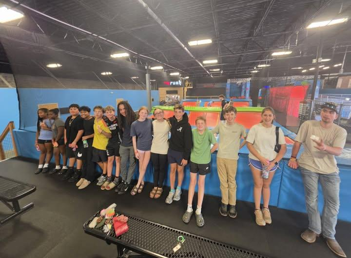

The Oglethorpe Echo,
4-H adds program assistant, agent role still in limbo
After a federal AmeriCorps cut, the county's 4-H office fills one position while another stays uncertain.

The Oglethorpe County 4-H youth development program has hired a program assistant for the 2026-27 school year, quelling concerns that staffing shortages would threaten the office’s ability to continue running its programs.
New program assistant Tiffany Anderson began Sept. 1.
Formerly a volunteer in the 4-H office, Anderson was recognized as the program’s volunteer of the year in 2024 and was named Northeast District 4-H Volunteer of the Year in 2025 by UGA 4-H staff.
Anderson is also a student at Emmanuel University and will complete her bachelor's in business management in November.
The path to this outcome hasn’t been simple.
The Oglethorpe County Board of Commissioners approved a funding request this fall to create her position, matching a Board of Education commitment made earlier this year. Each will contribute $23,500.
These approvals were originally to help fill a staffing gap left by a federal cut to the Americorps grant program and an unexpected resignation, said Shanna Reynolds, the county extension coordinator.
The staffing shortage traces back to April 2025, when the Department of Government Efficiency, or DOGE, cut federal funding for Americorps, the program that had previously funded Oglethorpe County’s 4-H program assistant position.
Kayla Latimer, the current program assistant, has been with the 4-H program since she began as a volunteer in 2022. Latimer stepped into the Americorps member role in 2023, helping support all youth development programming for 4-H in the county.
Latimer’s position for this school year was secured by an unexpected 12 months of additional Americorps funding.
“With the recent staffing updates, I expect my role to continue focusing on direct youth programming and operational support,” Latimer said. “Our office truly operates like a family, and we work together across all program areas to help children thrive and find their spark.”
That was welcome news, but Reynolds cautioned against relying on that source of money going forward.
“I don’t have any reason to think that that’s a long-term funding source for us,” she said. “I think we just got lucky and got another year of funding.”
While the 4-H program has begun the school year with two program assistants, the role of 4-H agent is yet to be filled following the resignation of Marcus Eason in May.
The county 4-H serves 400-500 students annually through 40-45 activities, including poultry judging, craft club, cotton boll and consumer judging, summer camps and community service initiatives, which Reynolds said requires a full-time 4-H agent and program assistant.
For much of the past year, the office has had only one full-time staff member.
Reynolds said she was told the University of Georgia’s College of Agriculture and Environmental Sciences, which covers more than two-thirds of the local agent’s salary, was in a hiring freeze to address its own budget deficit. She said UGA has agreed to permanently reduce the county’s annual share of the agent’s salary by $4,000.
“We don’t know currently how long it’s going to take us to get a full-time 4-H agent hired locally,” Reynolds said. “We’re at their mercy on getting that person hired.”